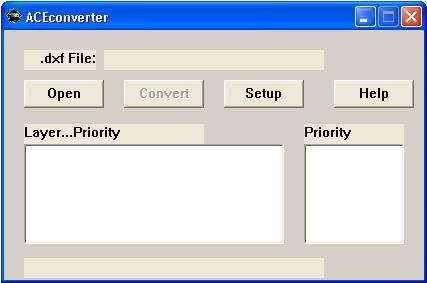
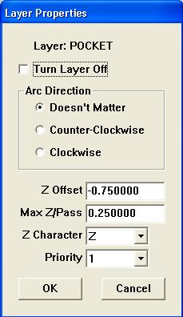
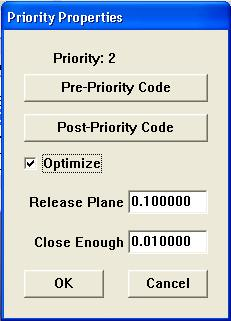
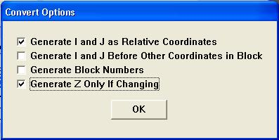

ACE Converter version 3.20 Users Manual
Last revised July 14, 2006
This program is free software; you can redistribute it and/or modify it under the terms of:
a) the GNU General Public License as published by the Free Software Foundation; either version 1, or (at your option) and
later version
This program is distributed in the hope that it will be useful, but WITHOUT ANY WARRANTY; without even the implied warranty of
MERCHANTABILITY or FITNESS FOR A PARTICULAR PURPOSE. See
the GNU General Public License for more details.
Ace Converter is copyrighted to Doug Yeager of Yeager
Automation, who reserves all rights to the program and the name "ACE
Converter" and is the original author of this work. This version is a
re-release by DAK Engineering under the
terms of the GNU General Public License.
See the changes.txt and gpl.txt files for a list of the changes and for the text of the GNU-GPL software license respectively.
Source code is in the directory \SRC from the install, and is complete to build an executable in Borland C++ version 5.02. Added in this version is a batch file and instructions to compile using the free version of the borland C++ 5.5.1 compiler (command line only)
Ace converter is an application that translates CAD (Computer Aided Design) files into tool path files.
Most CAD applications today allow the user to export drawing files in various different formats. One of those formats is DXF (Drawing Exchange Format). This is done so that the same drawing can be read into any CAD application, no matter which one was used to create it. Ace converter reads DXF files and and converts the entities to g-code that you can run on your machine.
Here's how to get ACE Converter on your computer. Future versions will feature an installer utility, but for now you have to do this manually.
When you first start Ace converter you'll be presented with this screen.

Open a .dxf file with your toolpath data in it. For this exercise you can use the sample.dxf file included in the download.
Ace converter will cut one layer at a time in order according to the priority assigned to it.
Priority one is first. When a DXF file is open, a list of the layers and the priority for each appears in the left-hand box.
Double click on a layer name to specify the cutting options for that layer.

Turning the layer off means that no cutting action will occur for this layer. By default, all layers are "on".
Ace converter will cut any arcs that are present in a direction that you choose using the arc direction buttons.
The Z offset sets the depth that each line in the layer will be machined to. Set the max Z depth for each pass using the text box, and the special character (if necessary) to address the Z axis on your machine. For example, a 1/2" deep machined pocket would use a Z offset of -0.500, and a Z per pass of .200 or so.
Lastly set the priority number for the layer. Priority one will be cut first then priority two, etc. You are only permitted to select the priority number one higher than the maximum already established so far, so work in order of priority from first to last. Hit OK or Cancel to make the layer properties box go away.
By double-clicking on the priority numbers on the right hand side you can set special options for each machining sequence.

The pre-and post priority code buttons allow you to output special code before the regular g-code output. Use these to produce special comments or control codes to turn on spindles, coolants, etc.
The release plane establishes how high in Z the tool be retracted to between passes.
Ordinarily Ace converter will program a retraction to the release plane after each entity is cut. By checking "optimize", you are asking for entities to be joined together whenever possible. The value for close enough establishes a boundary condition on exactly how close entity endpoints need to be together in order to be considered joined.
When you're finished establishing layers and priority you are ready to make the conversion. Press the convert button and the output G-code file will be generated. You have a few final options here:

For most Fanuc-style g-code interpreter programs such as TurboCNC, EMC and Mach3, you'll want to generate I and J as relative coordinates.
Some interpreters will require I and J to be produced at the start of the line. You also have the option to generate block numbers (N0010, N0020). For most interpreters neither of these will be necessary.
The final conversion option allows you to generate Z coordinates only when the Z axis is required to move. This conserves memory and allows easy hand editing for the depths.
The "Setup" button in the main window allows you to set default values for the Z offset, max Z per pass, "close enough" value, and the number of decimal points of precision to output in the g-code.
NOTE: At present Ace converter does not automatically output feed rates in the Gcode file, so you'll have to edit the file manually and insert them. Here is the raw g-code output for the file sample.dxf.
G00 Z0.1000 G00 X2.8726 Y2.7200 G01 Z-0.2500 G01 X4.6544 Y1.2560 G03 X6.4695 Y1.5222 I0.8076 J0.8144 G01 X6.4695 Y1.5222 Z-0.5000 G02 X4.6544 Y1.2560 I-1.0075 J0.5483 G01 X2.8726 Y2.7200 G01 X2.8726 Y2.7200 Z-0.2500 G01 X4.1215 Y4.0009 G01 X6.1698 Y3.5185 G01 X7.7518 Y5.4649 G01 X8.4012 Y3.8013 G02 X5.0541 Y4.5000 I-1.7409 J0.0268 G03 X1.8734 Y3.5684 I-1.2070 J-1.7744 G01 X1.8734 Y3.5684 Z-0.5000 G02 X5.0541 Y4.5000 I1.9736 J-0.8428 G03 X8.4012 Y3.8013 I1.6063 J-0.6719 G01 X7.7518 Y5.4649 G01 X6.1698 Y3.5185 G01 X4.1215 Y4.0009 G01 X2.8726 Y2.7200 G00 Z0.1000
It's just a series of line and arcs designed to test ACE maximally by providing line-line, line-arc, and arc-arc junctions at various angles.
Here are some tips to allow you to get the most out of Ace Converter:
Known bugs:
The most common problem is that the generated code file will be blank. Be sure that the DXF file that you're working with is a "version 12" compatible type and that the layer(s) contain basic straight lines and arcs only. Later versions have been known to cause issues.
Ace does not automatically insert a feed rate for you. Edit the generated code file with any text editor and add it on the first line that G01 or G02/03 appear:
G00 Z0.1000 G00 X2.8726 Y2.7200 G01 Z-0.2500 F10.0 G01 X4.6544 Y1.2560
If you're still struggling, send me an email at dkowalcz@dakeng.com. I'll help in whatever ways that I can.
Here are the changes planned for ACE converter in the future. Most of these have to do with usability.
Lastly, the multi-threading model that ACE is based on seems to induce instability in the application. It is planned to port the code to VB while making the interface improvements listed above.
Doug Yeager - Programming, original author, documentation.
Dave Kowalczyk - Programming, documentation.
Marcin Dawidowicz - Programming for v3.2 changes
The best way to contact me is via email:
Or if you prefer the normal mail:
Dave Kowalczyk 11032 SE 224 PL Kent, WA 98031 USAFor bug reporting, please send the problem code and perhaps a screenshot or two as a courtesy if appropriate to the issue. It helps enormously in analyzing problems.